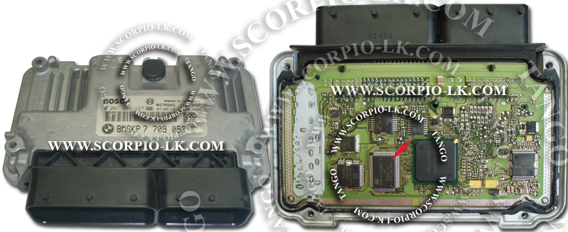
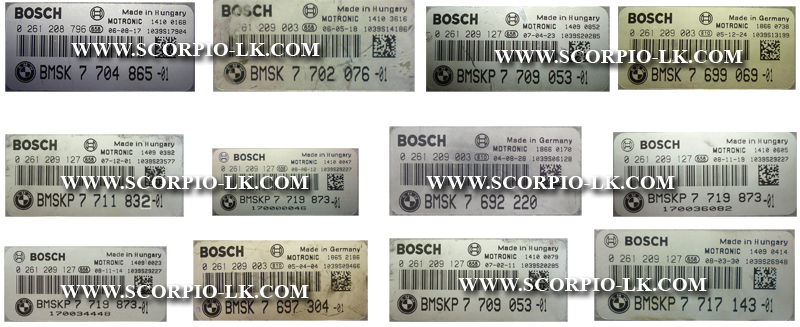

|
Bikes |
Top Previous Next |
|
BMW Bikes
After a keymaker finishes, a new dump will not be generated. Turn ignition on with the generated transponder, wait at least 10 sec and turn ignition off. Turn again ignition on and start an engine.
 
There are several types of programmers to read a flash in various ECU-s. We suggest to use the CMDFlash device of CMDTEC company:
The version Ver.3.1.0.1255 was tested on these ECU-s and can be recommended.
|